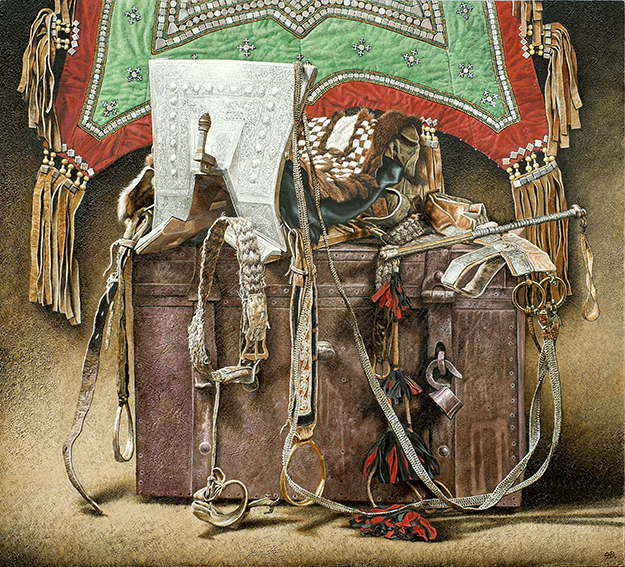
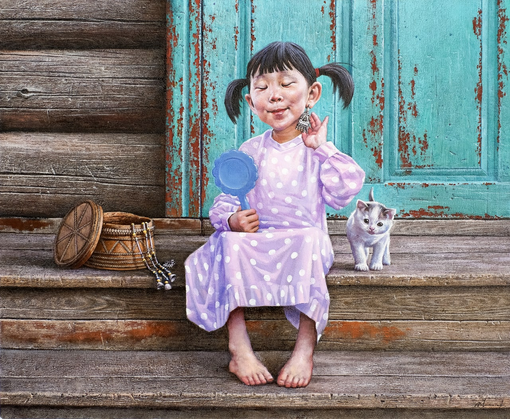
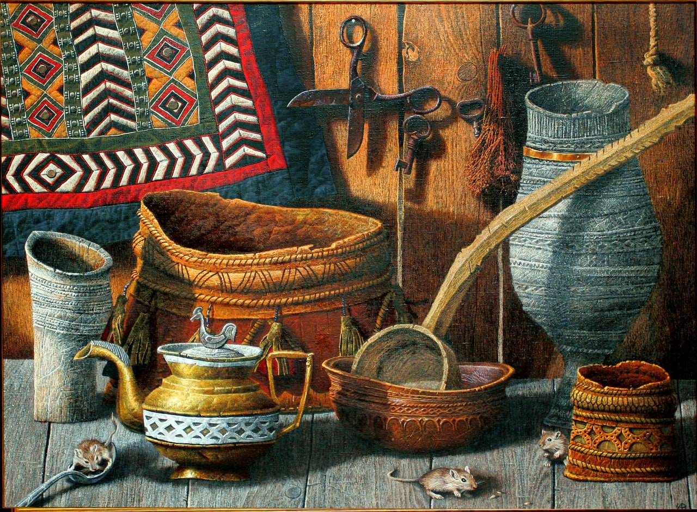
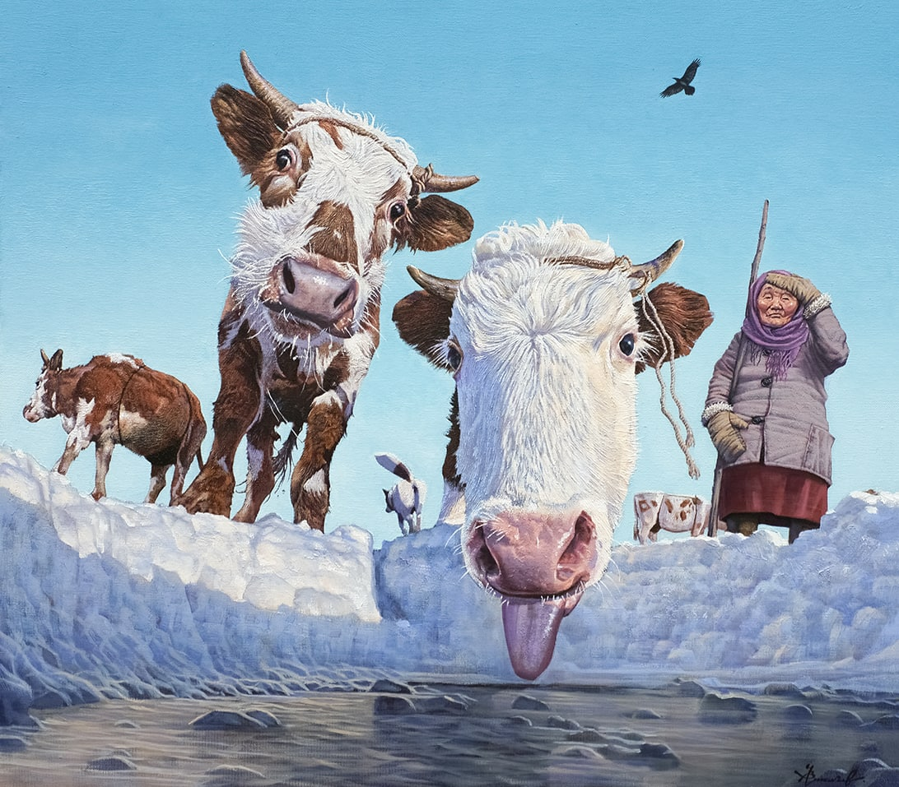
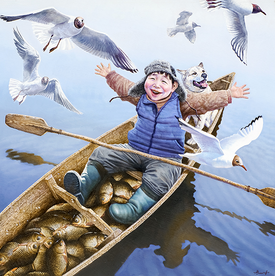
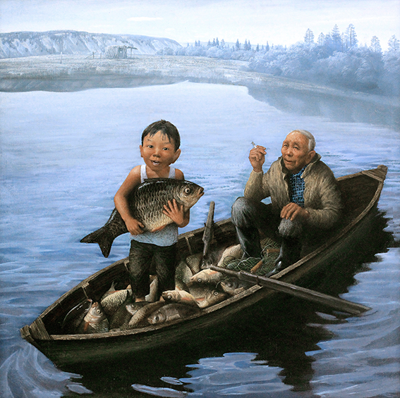
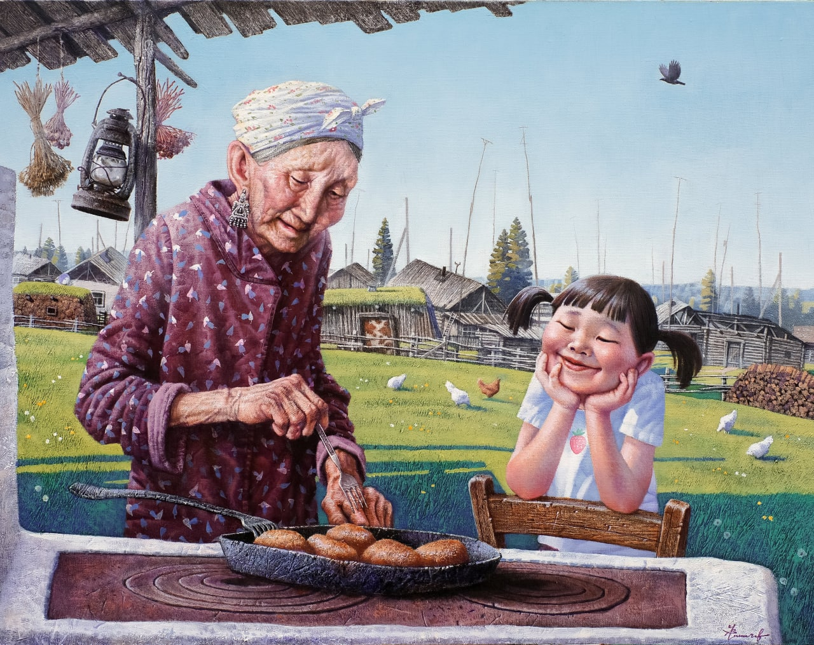
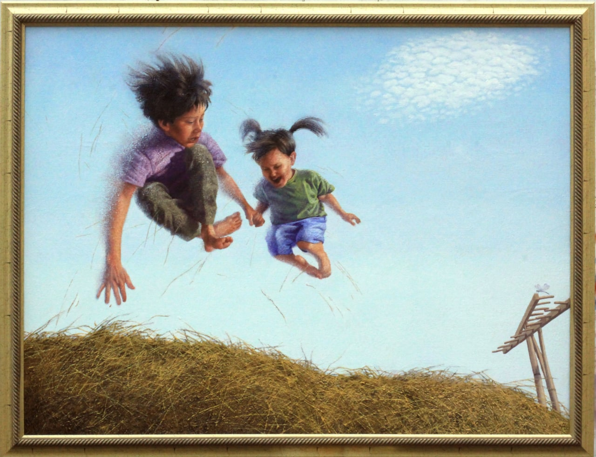
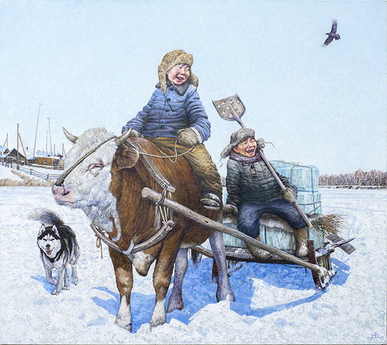
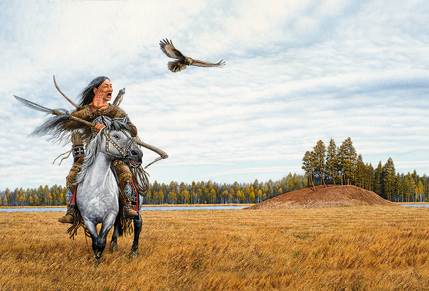

Төлкө төрдө, Судьбы дорога, Destiny's Road

Бабушкины серьги(Эбээ ытар5ата) х.м. 2020 г

Старая утварь х.м.2006г

Жизнь у колодца х.м. 2023г

Дьол, Happiness

Мечта Борис, Dreams

Бабушкины пирожки (Эбээм бэрэскитэ) 2020г, Grandma's dumplings

Полет х.м. 2010г, flight

Муус боотурдара, Heros of ice

зов с высоким небом, Call of ancestors